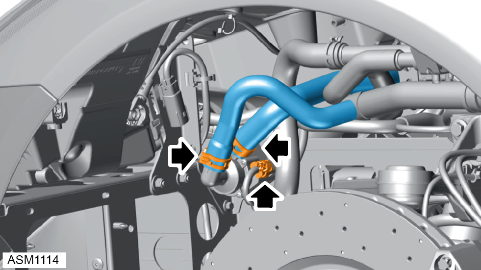
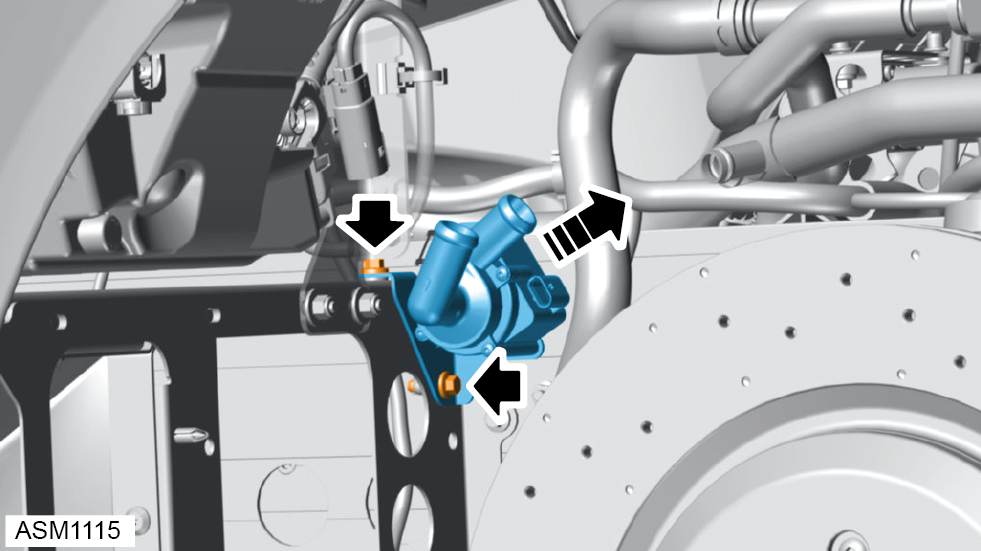

Recirculation Pump - LHD
Print
Operation Code: 18.05.16-02
Removal
- Remove front wheelarch liner left side. Refer to procedure.

- Install clamps to inlet and outlet pipes to limit coolant loss.
NOTE: Be prepared to catch any excess fluid.
- Disconnect harness connector from recirculation pump.
- Disengage hose clamps (x2) securing inlet and outlet pipes to recirculation pump.
- Remove inlet and outlet hoses.

- Remove M6x20 bolts (x2) securing recirculation pump bracket to radiator mounting bracket assembly. Torque 10 Nm.
- Remove recirculation pump.
Installation
- Installation is the reverse of removal procedure except for the following:
- Check and top up coolant if necessary.